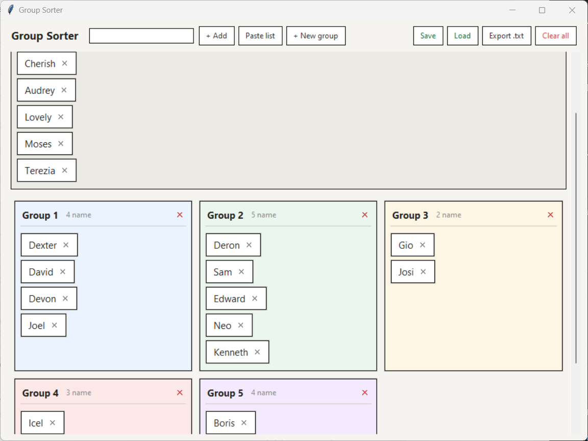

What it does
Group Sorter is for the moments when you need to divide people into teams, tables, or sections and want to place each person by hand instead of leaving it to a random shuffle.
Every name starts in the Unassigned pool. Create as many groups as you need, drag names into them, and move them around until the grouping looks right. When you're done, export the result as a text file or save the session to pick up later.
Features
Drag and drop
Grab a name and drop it on any group, or back on the pool to unassign it. A floating copy follows your cursor while you drag.
Add names your way
Type a name and press Enter, or use Paste list to add many at once from your clipboard. Lines and tab-separated values both work, and duplicates are skipped.
Unlimited groups
Add groups with one click. Each gets its own pastel colour, and the layout wraps to three columns.
Quick renaming
Double-click a name to fix a typo. Double-click a group title to rename it.
Save and load
Save your whole session as a
.jsonfile and load it again later, with names and groups exactly as you left them.Export to text
Export a readable
.txtsummary with a timestamp, each group's members, and anyone still unassigned.
Run it yourself
Group Sorter uses only Python's standard library, so there is nothing to install besides Python 3 with tkinter. tkinter is included with the standard Python installers for Windows and macOS.
- Download or clone the repository.
- Open a terminal in the project folder.
- Start the app:
python group_sorter.pyPrefer not to use Python? The packaged download is on the itch.io page.
Using the app
| To do this | Do this |
|---|---|
| Add one name | Type it in the box and press Enter or click + Add |
| Add many names | Copy a list, then click Paste list |
| Create a group | Click + New group |
| Move a name | Drag it onto a group, or onto the Unassigned pool |
| Edit a name or group title | Double-click it, then press Enter to confirm or Esc to cancel |
| Remove a name or group | Click the ✕ beside it. A removed group's names return to the pool. |
| Keep your work | Save and Load use .json. Export .txt makes a plain-text report. |
Built with
Python 3 and tkinter, in a single script file. No third-party packages.